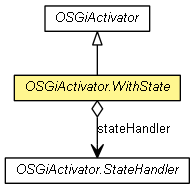

org.eclipse.net4j.util.om
Class OSGiActivator.WithState
java.lang.Object
 org.eclipse.net4j.util.om.OSGiActivator
org.eclipse.net4j.util.om.OSGiActivator.WithState
org.eclipse.net4j.util.om.OSGiActivator
org.eclipse.net4j.util.om.OSGiActivator.WithState
- All Implemented Interfaces:
- org.osgi.framework.BundleActivator
- Enclosing class:
- OSGiActivator
- public abstract static class OSGiActivator.WithState
- extends OSGiActivator

An OSGi activator that stores bundle state between sessions.
- Since:
- 3.1
OSGiActivator.WithState
public OSGiActivator.WithState(OMBundle bundle)
doStart
protected final void doStart()
throws Exception
- Overrides:
doStart in class OSGiActivator
- Throws:
Exception
doStop
protected final void doStop()
throws Exception
- Overrides:
doStop in class OSGiActivator
- Throws:
Exception
doStartWithState
protected abstract void doStartWithState(Object state)
throws Exception
- Throws:
Exception
doStopWithState
protected abstract Object doStopWithState()
throws Exception
- Throws:
Exception
Copyright (c) 2004 - 2012 Eike Stepper (Berlin, Germany) and others.